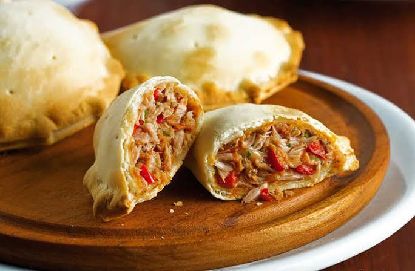

Empanada tradicional de atún
Empanada casera elaborada con masa crujiente y un jugoso relleno de atún, pimiento y cebolla pochada.
| Ingredientes | Elaboración | Fotografía |
|---|---|---|
|
Se sofríen las verduras y se mezclan con el atún. Se estira la masa en dos capas, se coloca el relleno, se sellan los bordes y se hornea a 180 ºC durante 35 minutos. |
 |